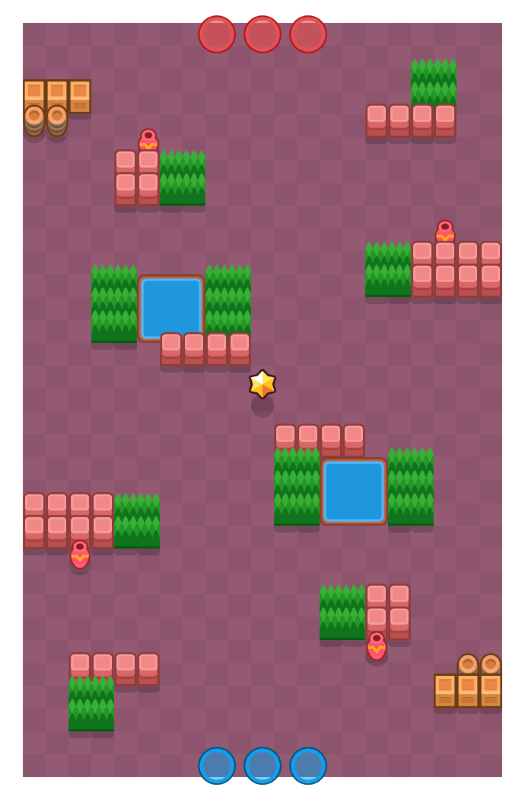

별내림 계곡(Shooting Star)

게임 모드
현재 상태
삭제
제작자
슈퍼셀
존재 기간
2017년 6월 15일 ~ 2019년 1월 29일
2019년 6월 29일~2019년 12월 18일
마지막 경쟁전 등장
2019년 12월 18일
다른 맵에 비해서 굉장히 개활적인 맵으로, 맵 중 지형지물이 거의 없다. 2019년 1월 다른 바운티 맵과 함께 숙청되었으나 6월에 타운 테마로 복각되었고, 약 6개월동안 바운티 로테이션을 차지하다가 12월 해적 업데이트와 함께 사라졌다.